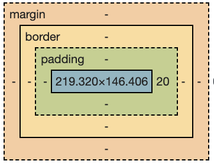
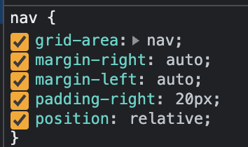

What is the difference between Margin, Border, and Padding?
Margin is the space around a specific building block or element. I think of it as the space that lies outside of the element.

Since each element on the page is a defined area, the border is the boundary around an element.
Finally, padding is the space between the content inside the element and it's boundary/edge/border.
How are they used?
The following code shows values set for all surrounding space for the navigation element grouping as:
margin-top: 0.5%;
margin-right: auto;
margin-left: auto;
margin-bottom: 0.5%;

The above screen shot shows this as applied to the navigation section of the page.
When are they used?
When creating a layout of a web page, each element should be separated from the other elements on the same section of the page.